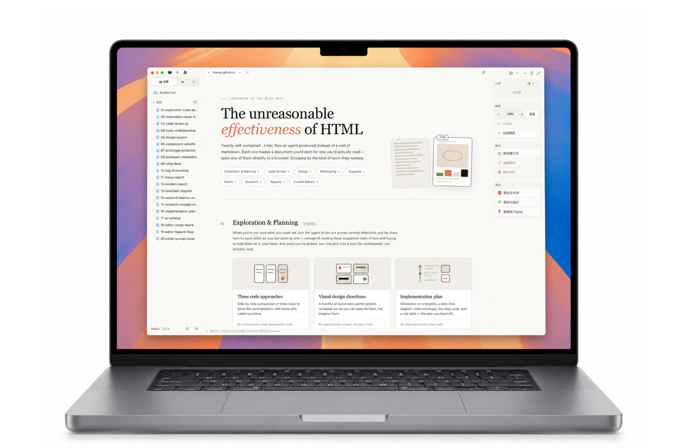
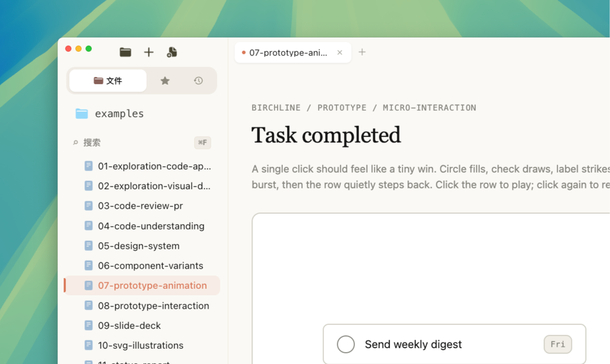
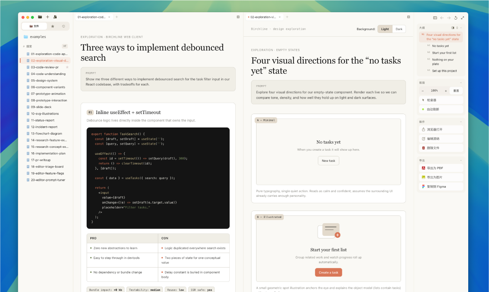
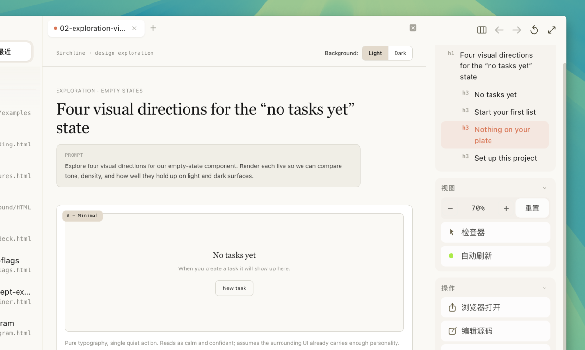
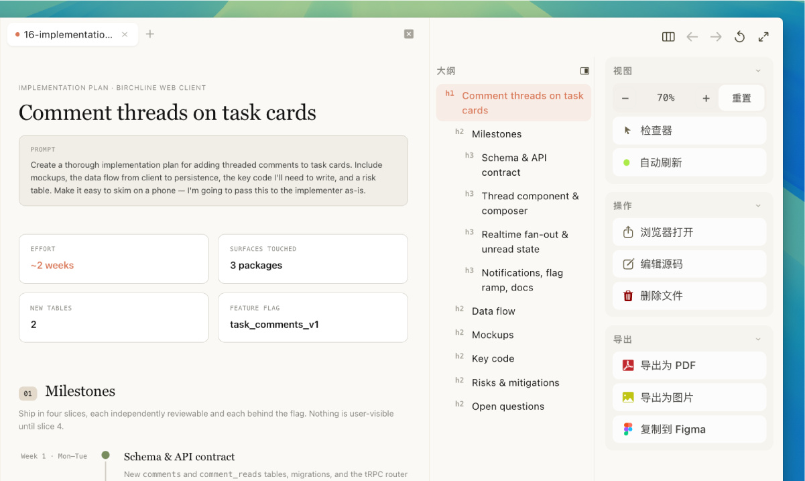
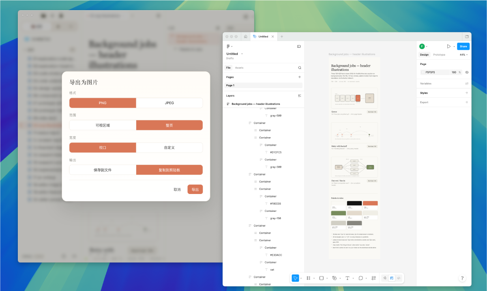
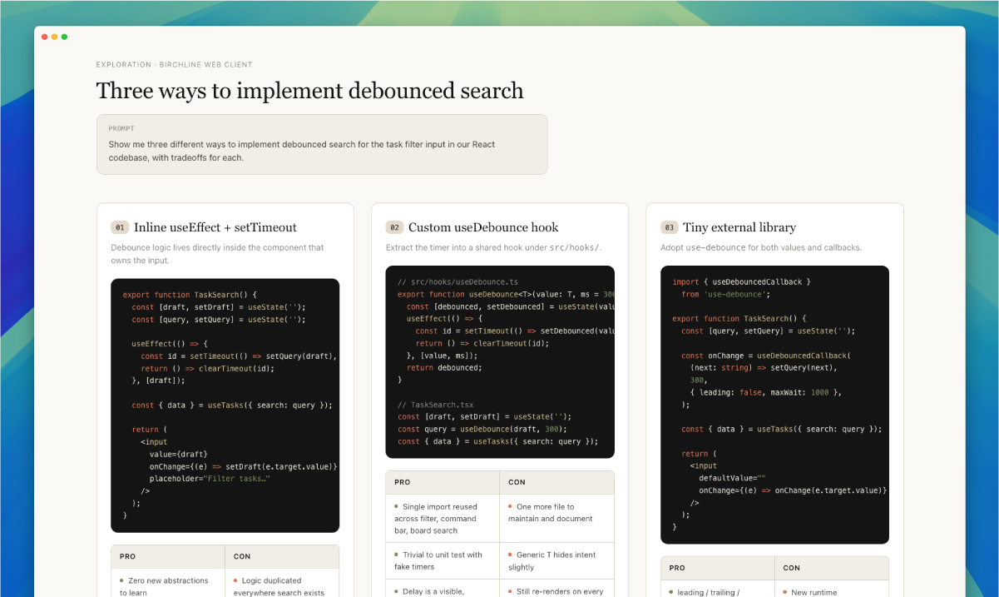

AI 时代，HTML 正在成为越来越重要的本地生产力文档格式——但主流浏览器对本地 HTML 的支持极为有限：没有文件导航、没有页面大纲、没有实时预览、编辑和导出都很割裂。
Helixo 是一款专为本地 HTML 工作流设计的桌面工具，深度适配 Agent 协作场景，让 HTML 从"网页载体"真正变成可管理、可协作、可扩展的生产力文档。


打开一个文件夹，Helixo 自动识别其中所有 HTML 文件，按目录结构呈现。支持小文件过滤、MHTML 识别，再也不用在 Finder 里逐个双击。
常用文件一键收藏，最近打开的文档随时回溯。左侧边栏在"文件树 / 收藏夹 / 最近"三种视图间自由切换。

任意拖拽标签页即可左右分屏，同时对比两份文档，或一边写、一边看效果。双编辑器分组、标签页 drag-and-drop，操作丝滑程度不输现代代码编辑器。
关闭即保存，打开即继续。Helixo 自动记忆你的工作状态：打开的文件、标签页顺序、分屏布局、侧边栏宽度、缩放比例，下次启动一键回到上次离开的地方。

开启自动刷新后，外部任何修改（包括 AI Agent 自动生成或修改内容）都会即时反映在预览中。不再需要手动切回浏览器按 F5 刷新，提升 AI 协作工作效率。
预览和源码一键切换。改代码、看效果、再调代码，小修小改在一个窗口内完成循环，无需编辑器和浏览器来回跳转。

自动从 HTML 页面中提取 h1-h6 标题结构，生成可点击的目录导航。长文档阅读时，左侧大纲随滚动实时高亮当前位置，点击即可跳转 —— 长文档型页面浏览神器。
点击预览中的任意元素，实时查看 Tag、ID、Class、Color、Background、Font-Size 等样式信息。前端开发者调试样式时，无需再开浏览器 DevTools。

支持导出完整页面为 PDF、PNG/JPEG（图片可自定义视口宽度）。做分享、归档、演示素材时，不再受浏览器打印样式的限制。
一键将 HTML 页面转换为 Figma 可识别的格式拷贝到剪贴板，设计协作无缝衔接。从代码到设计稿，不再需要手动还原。

整屏只展示文件本身内容，工具栏、侧边栏、标签栏全部隐去。适合演示、截图、沉浸式阅读，也适合向他人展示时聚焦内容本身。
完整支持英/中/日/韩四语言，界面所有文案（包括工具提示、状态栏、错误提示）全部国际化。
Helixo 零后端依赖，所有文件本地处理。
轻量、快速、为本地 HTML 工作流而生。